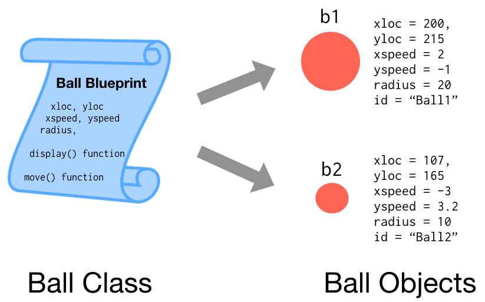

What's an object?
The usual business of programming involves data (lists, vectors, matrices, etc.) and functions, which take data as input and do something (like draw a circle) or return something (maybe the result of a complex calculation).
Frequently, the same pieces of data and function are used repeatedly as a group--to simulate a moving ball for example, we will have data on the ball's location (x and y), its speed (how many pixels it will move in the x and y direction in the next timestep), a radius, and maybe something like an ID string. A function like move() would take the position and speed data, and update the position. A function like display() needs position information and the radius to draw the ball.
An object is a more formal way to group all of these pieces together. Objects are not strictly necessary for writing programs, but by organizing related data and functions they can simplify the process considerably.
We'll often talk about classes as well--a class is the "blueprint" for potentially many objects of the same type. The objects themselves are the actual collections of data built from the class template. Let's consider our ball example, a Ball class is code that specifies that all Ball objects must have an xloc, yloc, xspeed, yspeed, radius, and id, as well as a function display() and a function move().

In a way, the word Ball itself is a bit of data associated with an object, since we need some way to know that an object x is a Ball, and not, say, a Car. In Processing.R we recommend capital initials for class names (e.g. Ball rather than ball).
Note: Capitaliing classes (Ball, not ball) is a coding convention. It is very consistently observed in some languages (like Processing / Java) and less in others (p5.js / Javascript, Processing.R / R). Don't be too surprised to see exceptions to this rule in R code!
When talking about classes, some special terminology is also used. Functions that that are part of classes (and hence part of the objects of that class) are called methods. The variables belonging to each object are called instance variables, which hold different values for each instance of the class. In the figure above, radius has a different value for each Ball object.
Objects in R
This idea of classes serving to collect data and methods (not functions!) into single objects hasn't been around forever, and over the years different programming languages have captured the idea in different ways. Today, the most popular languages like Java, C++, Python, and even JavaScript have settled on a pattern where a class template is defined within a single chunk of code. If you've used any of these languages, this chunk of JavaScript might look familiar (if not, feel free to just skim):
// This code is JavaScript, not R...
class Ball(x, y, xs, yx, r, i) {
this.xloc = x;
this.yloc = y;
this.xspeed = xs;
this.yspeed = ys;
this.radius = r;
this.id = i;
this.move = function() {
this.xloc = this.xloc + this.xspeed;
this.yloc = this.yloc + this.yspeed;
}
this.display = function() {
ellipse(this.xloc, this.yloc, this.radius, this.radius);
}
}
var b1 = new Ball(55, 75, 2, -1, 20, "Ball1");
var b2 = new Ball(107, 165, -3, 3.2, 10, "Ball2");
b1.move();
b1.display();
b2.move();
b2.display();
This code defines a Ball class (blueprint), creates two Ball objects b1 and b2, and then asks each in turn to move itself then display itself... but that's enough JavaScript--this tutorial is supposed to be about R! Although modern versions of R can follow this same sort of coding pattern, it hasn't always, since R originally drew inspiration from the statistical language and functional languages Scheme and Lisp.
Over the years, R has been graced with three different ways to define classes in code.
- S3 Classes - these are the oldest, and the most commonly found in R
- S4 Classes - these utilize a hybrid of S3 class concepts, and more modern syntax similar to the JavaScript example above
- Reference Classes (RC) - the most recently added, these are very similar to classes defined by Java, JavaScript, Python, C++, etc.
Processing.R supports S3 classes only -- S3 classes are the most commonly found in R code, and they are what will be covered in this tutorial.
Note: When looking at R code "in the wild" be careful not to mix S3, S4, and RC classes -- and keep in mind that only S3 is supported in Processing.R.
Attributes and Lists
Before we can write some classes in R, we need to discuss a feature of R that is not found in many other languages: attributes. R attributes are a kind of "metadata" that we can attach to any other data.
For these examples we will be experimenting with code in a Processing.R sketch inside the setup function, and periodically running the sketch to see the results.
setup <- function() {
exit()
}
Let's create a random sample of 100 numbers using the rnorm() function:
samp <- rnorm(100, mean = 20, sd = 2)
print(samp)
c(17.476707120743, 21.36868260950083, 17.8269424011346, 20.07978640322603, 21.12157543421291,... 100 elements total
We may want to remember, for later use, what kind of data this is. We can do this by making up a "sampletype" attribute and adding it to our sample with the attr() function:
attr(samp, "sampletype") <- "Normal Sample"
Then, later, we can extract attributes:
setup <- function() {
samp <- rnorm(100, mean = 20, sd = 2)
attr(samp, "sampletype") <- "Normal Sample"
print(samp)
print("\n")
print(attr(samp, "sampletype")) # Prints "Normal Sample"
exit()
}
Attributes are also how R stores class information. Let's define a numeric vector containing some information for a ball:
setup <- function() {
b1 <- c(55, 75, 2, -1, 20) # xloc, yloc, xspeed, yspeed, radius
attr(b1, "class") <- "Ball"
print(b1)
print("\n")
print(attr(b1, "class"))
exit()
}
Now, as far as R is concerned, b1 is a Ball object! This is because "class" is an attribute that R treats specially to hold this information. This is so common that there's a special function class() just to set the class attribute of an object:
class(b1) <- "Ball"
We can assign attributes to any kind of data in R. Here we've used a numeric vector of 5 numbers to store data about the ball. This isn't too flexible--vectors (created with the c() function) can only store one type of data (numbers in this case) as a basic array. Lists, on the other hand, are more flexible: they can hold vectors of different kinds, and even other lists. Maybe we want to store ball data as a location vector, a speed vector, a radius number (actually a vector of length 1 in R), and an id:
b1 <- list(c(55, 75), c(2, -1), 20, "Ball1")
class(b1) <- "Ball"
Another cool thing about lists (and vectors too, actually) is that list elements can have names:
b1 <- list(loc = c(55, 75), speed = c(2, -1),
radius = 20, id = "Ball1")
class(b1) <- "Ball"
This way, we can work with elements by their name, using a $-sign.
setup <- function() {
b1 <- list(loc = c(55, 75), speed = c(2, -1), radius = 20, id = "Ball1")
class(b1) <- "Ball"
print(b1)
print("\n")
print(class(b1)) # prints "Ball"
print("\n")
print(b1$loc) # prints "c(55, 75)"
print("\n")
print(b1$loc[2]) # prints "215.0"
exit()
}
We can assign to new entries of a list by using a new name as well:
b1$volume <- pi * b1$radius ^ 2 # pi is built into R
And, since loc and speed are both vectors, and R is vectorized (most operations work on vectors in an element-by-element manner), we can do something like this to print where the ball will be next:
print(b1$loc + b1$speed) # prints 202, 214
By the way, constructor is the special name for a function that creates an object of the proper form. Usually the function name is the same as the class name:
setup <- function() {
b1 <- Ball(55, 75, 2, -2, 20, "Ball1")
print(b1)
exit()
}
Ball <- function(x, y, xs, ys, r, i) {
newb <- list(loc = c(x, y), speed = c(xs, ys),
radius = r, id = i)
class(newb) <- "Ball"
return(newb)
}
Methods
The above covers how we can collect different kinds of data together, and assign a "class" to that collection. But what about the class functions--the methods--that we want to build to go along with the data? In the simplest case, we can just create a function. here's one that takes a Ball object, add the speed to the location, and returns it:
move <- function(someball) {
someball$loc <- someball$loc + someball$speed
return(someball)
}
To use it, we can create a Ball object, and call the function.
b1 <- Ball(55, 75, 2, -1, 20, "Ball1")
b2 <- move(b1)
print(b1$loc) # prints 55, 75
print(b2$loc) # prints 202, 214
Notice that we've now got two ball objects, b1 and b2, and they have different locations. This is because most R functions are pass-by-value, or, if it helps, "pass-by-copy." This means that inside the move() function the variable someball is effectively a copy of what was passed to the function; the function then modifies this copy and returns it. (Sidenote: many languages are not pass-by-value, and don't make copies in this way. R's Reference Classes operate more similarly to those languages.)
If we want to modify the b1 ball we can reassign the variable from the old ball object to the new one.
b1 <- move(b1)
R does a lot of work behind the scenes to make this copying as efficient as possible, so try not to stress about it. While we're at it, let's define a display() function:
display <- function(someball) {
ellipse(someball$loc[1], someball$loc[2],
someball$radius, someball$radius)
}
In order to make this actually display we will need to call if from the Processing.R draw loop function. Let's modify our sketch, adding draw, removing exit() from setup so that the draw window will stay open, and adding noLoop() to draw so that the sketch will draw once, then pause.
setup <- function() {
b1 <- Ball(55, 75, 2, -1, 20, "Ball1")
b1 <- move(b1)
print(b1$loc) # prints 55, 75
}
draw <- function() {
display(b1)
noLoop()
}
Ball <- function(x, y, xs, ys, r, i) {
newb <- list(loc = c(x, y), speed = c(xs, ys),
radius = r, id = i)
class(newb) <- "Ball"
return(newb)
}
move <- function(someball) {
someball$loc <- someball$loc + someball$speed
return(someball)
}
display <- function(someball) {
ellipse(someball$loc[1], someball$loc[2],
someball$radius, someball$radius)
}
Dispatch
We're getting closer. The trouble here is that there's nothing really "attaching" the move() and display() functions to Ball objects. This is a shame, because they'll only really work with Ball objects, not objects of other types.
To motivate what we mean, we need to come up with some other type of object that could move and be displayed. How about a Particle (like a particle of pollen)? Particles will also have an x and y location, but each particle moves by randomly adjusting its location (so it wiggles), and we'll always draw them with a small radius of 2 pixels.
# Constructor
Particle <- function(x, y) {
newp <- list(loc = c(x, y))
class(newp) <- "Particle"
return(newp)
}
# function for moving a particle
move <- function(someparticle) {
someparticle$loc[1] <- someparticle$loc[1] + rnorm(1, mean = 2)
someparticle$loc[2] <- someparticle$loc[2] + rnorm(1, mean = 2)
return(someparticle)
}
# function for displaying a particle
display <- function(someparticle) {
ellipse(someparticle$loc[1], someparticle$loc[2], 2, 2)
}
Now we can create a couple of particles, have them move, and display them:
p1 <- Particle(400, 400)
p2 <- Particle(500, 500)
p1 <- move(p1)
p2 <- move(p2)
display(p1)
display(p2)
But wait! We've defined functions move() and display(); do these overwrite the ones we wrote earlier for balls? Yes! And that's a problem.
One solution is to make these functions class-specific (and remember, we call class-specific functions methods), by putting the name of the class as part of the function name:
# move method for Ball object
move.Ball <- function(someball) {
someball$loc <- someball$loc + someball$speed
return(someball)
}
# move method for Particle objects
move.Particle <- function(someparticle) {
someparticle$loc[1] <- someparticle$loc[1] + rnorm(1, mean = 0, sd = 2)
someparticle$loc[2] <- someparticle$loc[2] + rnorm(1, mean = 0, sd = 2)
return(somparticle)
}
Note: In R, unlike in Java or JavaScript, the . character isn't very special: it can be used in variable and function names just like any other character. As we'll see though, it is necessary to use this naming scheme for class-specific methods.)
Now we can say something like this without worry:
p1 <- move.Particle(p1)
b1 <- move.Ball(b1)
To make our code cleaner, it would be nice if we could define a generic move() function, and if the parameter given had class "Ball" then it called move.Ball(), and if it had class "Particle" then it called move.Particle(). We could try something like this
move <- function(x) {
if(attr(x, "class") == "Ball") {
answer <- move.Ball(x)
return(answer)
} else if(attr(x, "class") == "Particle") {
answer <- move.Particle(x)
return(answer)
}
}
That's ok, but it turns out this functionality is built into R. Here's the "official" way to do it.
# R definition for the generic function.
move <- function(x) {
UseMethod("move", x)
}
The function UseMethod() does exactly what we want: it looks at the class of x, calls move.<class of x>() instead, and returns the answer.
This is known as dispatch, and a function that "dispatches" to a method based on class information is called a generic function.
Compared to languages like Java, C++, etc., R S3 objects have the same basic stuff--data, class information, and methods. But, whereas Java et al. collect all of this into a single chunk of code, R S3 objects have all of these pieces defined separately. It is the "class" attribute that ties them all together conceptually. In Processing.R, many of these pieces should live in the same file (or tab) to help with reading. If functions for multiple classes appear in the smae long piece of code, organize them by grouping them together and labeling them with comments.
Putting it together
Finally, let's write a program that simulates two ball objects and two particle objects.
Note: Processing.R currently does not support multiple tabs in the PDE editing window -- all code must appear in the one main tab. Ideally, we would separate our code into three tabs -- the main code first, then the Ball code into its own tab and the Particle code into its own tab. For now we'll place all of the code into different sections of the main script tab and label those sections with code comments.
We will also store all objects (both Balls and Particles) as elements of a single global objects list.
#####################
## Main program code
#####################
# global "objects" list to store Balls and Particles
objects <- list()
# settings: create window
settings <- function() {
size(400, 400)
}
# setup: add objects to objects list
setup <- function() {
# ball in upper-right, moving leftward & down
objects$b1 <- Ball(350, 50, -1.5, 1.2, 15, "ball1")
# ball in uppr-left, moving rightward & down
objects$b2 <- Ball(50, 50, 1.2, 1.5, 20, "ball2")
# particle in lower-left
objects$p1 <- Particle(50, 350)
# particle in lower-right
objects$p2 <- Particle(350, 350)
}
# draw: each frame, update each object
draw <- function() {
background(255, 255, 255)
display(objects$b1)
display(objects$b2)
display(objects$p1)
display(objects$p2)
objects$b1 <- move(objects$b1)
objects$b2 <- move(objects$b2)
objects$p1 <- move(objects$p1)
objects$p2 <- move(objects$p2)
# reset sketch every 300 frames
if(frameCount %% 300 == 0) {
processing$setup()
}
}
##########################################
## Ball class
##########################################
# constructor
Ball <- function(x, y, xs, ys, r, i) {
newb <- list(loc = c(x, y), speed = c(xs, ys),
radius = r, id = i)
class(newb) <- "Ball"
return(newb)
}
# display method
display.Ball <- function(someball) {
ellipse(someball$loc[1], someball$loc[2],
someball$radius, someball$radius)
}
# move method -- returns updated ball
move.Ball <- function(someball) {
someball$loc <- someball$loc + someball$speed
return(someball)
}
#############################################
## Particle class
#############################################
# constructor
Particle <- function(x, y) {
newp <- list(loc = c(x, y))
class(newp) <- "Particle"
return(newp)
}
# display method
display.Particle <- function(someparticle) {
ellipse(someparticle$loc[1], someparticle$loc[2], 2, 2)
}
# move method
move.Particle <- function(someparticle) {
someparticle$loc[1] <- someparticle$loc[1] + rnorm(1, mean = 0, sd = 2)
someparticle$loc[2] <- someparticle$loc[2] + rnorm(1, mean = 0, sd = 2)
return(someparticle)
}
#####################
## Generic functions
#####################
move <- function(x) {
UseMethod("move", x)
}
display <- function(x) {
UseMethod("display", x)
}
Improvements
One obvious modification would be to use a for-loop to display and move each object; because we use the same generic move() and display() functions for both types of objects, we needn't be concerned about whether each object is a Ball or Particle. Here we use [[]]-syntax to access list elements by index number. (With vectors we can use []-syntax to identify elements, but with lists [] always references a sub-list, rather than the element stored at a particular location.)
draw <- function() {
background(255, 255, 255)
for(i in seq(1:length(objects))) {
display(objects[[i]])
objects[[i]] <- move(objects[[i]])
}
}
Alternatively, we can use R's lapply() function, which applies a function to each element of a given list. If the function returns something, lapply() returns a list of the returned answers.
draw <- function() {
background(255, 255, 255)
lapply(objects, display)
objects <- lapply(objects, move)
}
|